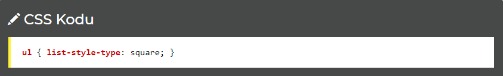
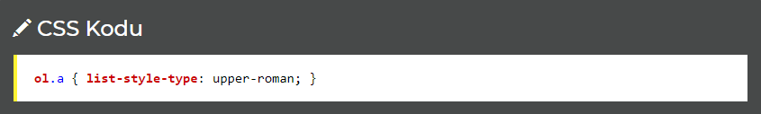
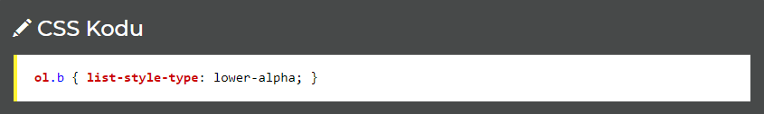
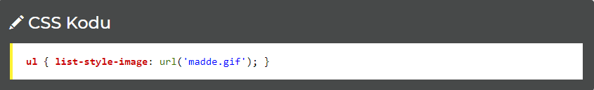
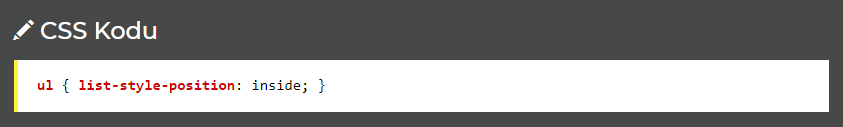
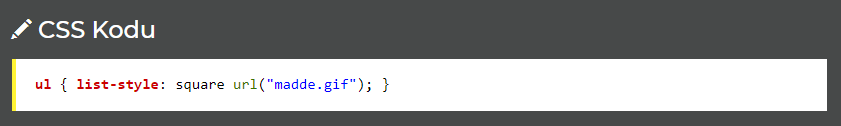

CSS Listeleme
Listelerde kullandığımız madde imlerini biçimlendirirken CSS'den faydalanabiliriz.
CSS üç bakımdan işimize yarar:
Listelerde biçimlendirme yaparken sıklıkla kullanılan komutlar:
list-style-type: Listeleme Şekli Tipi
Bir listenin stilini belirlememizi sağlar. Aşağıdaki örnekte madde işaretleri kare (square) olacaktır:

Aşağıdaki şekilde görünecektir:
HTML Görünümü
Listeleme Şekilleri
UL (maddeli) ve OL (numaralı) listelerde farklı farklı stiller kullanılabilir.
Örneğin numaralı listemizdeki numaraların roma rakamı olmasını istiyorsak:

Alfabedeki küçük harflerin listelenmesini istiyorsak:

İçi boş daireleri madde imi yapmak istiyorsak:

Görüldüğü gibi birçok şekli var. Kullanabileceklerinizin tamamı:
OL (numaralı liste) için: armenian, decimal, decimal-leading-zero, lower-alpha, lower-greek, lower-latin, lower-roman, none (boş bırak), upper-alpha, upper-latin, upper-roman.
UL (maddeli liste) için: circle (içi boş yuvarlak), disc (yuvarlak), square (kare), none (boş bırakır - göstermez).
list-style-image: Madde İşareti Yerine Resim Kullanmak
Küçük bir resim belirterek onun madde imi yerine kullanılmasını sağlayabiliriz.

Bu durumda madde.gif resmi her maddenin başında kullanılacak madde imimiz olacaktır.
list-style-position: Madde İmi Nerede Olacak?
Madde iminin maddenin içinde mi dışında mı olacağını belirtir. inside içinde, outside dışında olacak demektir.

Bu durumda madde.gif resmi her maddenin başında kullanılacak madde imimiz olacaktır.
list-style: Kısa Yoldan Kullanım
Yukarıda belirtilen tüm özellikleri tek bir kod ile de kullanabiliriz. Aşağıdaki örneğe bakalım:

Örneğe bakılırsa madde imimiz kare biçimli olacak ve üzerine madde.gif işlenecektir. Yani önce list-style-type belirttik sonra list-style-image belirttik.